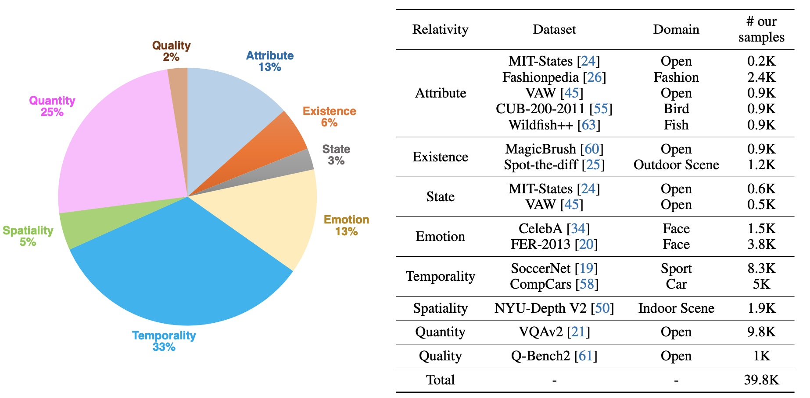

The ability to compare objects, scenes, or situations is crucial for effective decision-making and problem-solving in everyday life. For instance, comparing the freshness of apples enables better choices during grocery shopping, while comparing sofa designs helps optimize the aesthetics of our living space. Despite its significance, the comparative capability is largely unexplored in artificial general intelligence (AGI). In this paper, we introduce CompBench, a benchmark designed to evaluate the comparative reasoning capability of multimodal large language models (MLLMs). CompBench mines and pairs images through visually oriented questions covering eight dimensions of relative comparison: visual attribute, existence, state, emotion, temporality, spatiality, quantity, and quality. We curate a collection of around 40K image pairs using metadata from diverse vision datasets and CLIP similarity scores. These image pairs span a broad array of visual domains, including animals, fashion, sports, and both outdoor and indoor scenes. The questions are carefully crafted to discern relative characteristics between two images and are labeled by human annotators for accuracy and relevance. We use CompBench to evaluate recent MLLMs, including GPT-4V(ision), Gemini-Pro, and LLaVA-1.6. Our results reveal notable shortcomings in their comparative abilities. We believe CompBench not only sheds light on these limitations but also establishes a solid foundation for future enhancements in the comparative capability of MLLMs.
CompBench comprises 39.8K triplets, each containing 1) a pair of visually or semantically relevant images, 2) a question about their relativity, and 3) a ground-truth answer. We consider a wide range of questions categorized into eight aspects of relativity.
Attribute Relativity tests the ability to recognize relative attributes such as size, color, texture, shape, and pattern. For instance, given two images of birds, we ask MLLMs to compare the length of their beaks (e.g., "Which bird has longer beaks?"). Existential Relativity assesses the comprehension of existence in comparisons, asking questions like "Which trait is in the left butterfly but not in the right butterfly?". State/Emotion Relativity examines if MLLMs can identify state variations, such as different degrees of baking and smiling. Temporal Relativity evaluates the understanding of time-related changes between two objects or scenes (e.g., "Which video frame happens earlier during a free kick?"). Spatial Relativity checks the ability to tell spatial differences (e.g., "Which cup looks further?"). Finally, Quantitiy/Quality Relativity investigates whether an MLLM understands the relativity of quantity and quality (e.g., "Which image contains more animal instances?").
The data curation pipeline for CompBench includes data selection, question generation, answer annotation, and verification. We rely on combinations of humans, computer programs, MLLMs (specifically GPT-4V), and CLIP similarity to select images and generate questions, based on relativity types and available metadata.
We evaluate four leading MLLMs (i.e., GPT-4V(ision), Gemini1.0-Pro, LLaVA-1.6, VILA-1.5) across eight relative comparisons spanning sixteen tasks. The top-performing model in each task is indicated in bold. ST: MIT-States, FA: Fashionpedia, VA: VAW, CU: CUB-200-2011, WF: Wildfish++, MB: MagicBrush, SD: Spot-the-diff, CE: CelebA, FE: FER-2013, SN: SoccerNet, CC: CompCars, ND: NYU-Depth V2, VQ: VQAv2, QB: Q-Bench2.
We observe that current MLLMs face challenges in answering relative questions in CompBench. All MLLMs achieve averaged accuracies over the sixteen tasks (columns) below 80%, with GPT-4V reaching the highest accuracy at 74.7%. In particular, the existing MLLMs struggle with answering relative questions related to Existence, Spatiality, and Quantity.
Error Analysis on CompBench. We observe four types of errors where GPT4-V falls short: (i) differentiating colors between objects and backgrounds, (ii) counting small or distant objects, (iii) identifying objects within crowded scenes, and (iv) recognizing out-of-focus details.
TODO